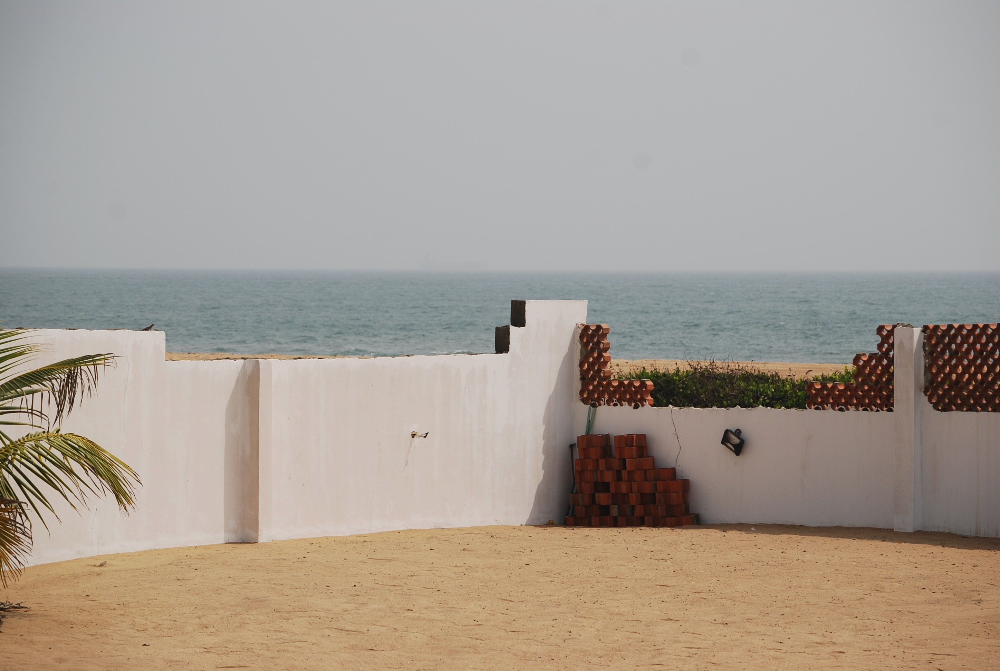
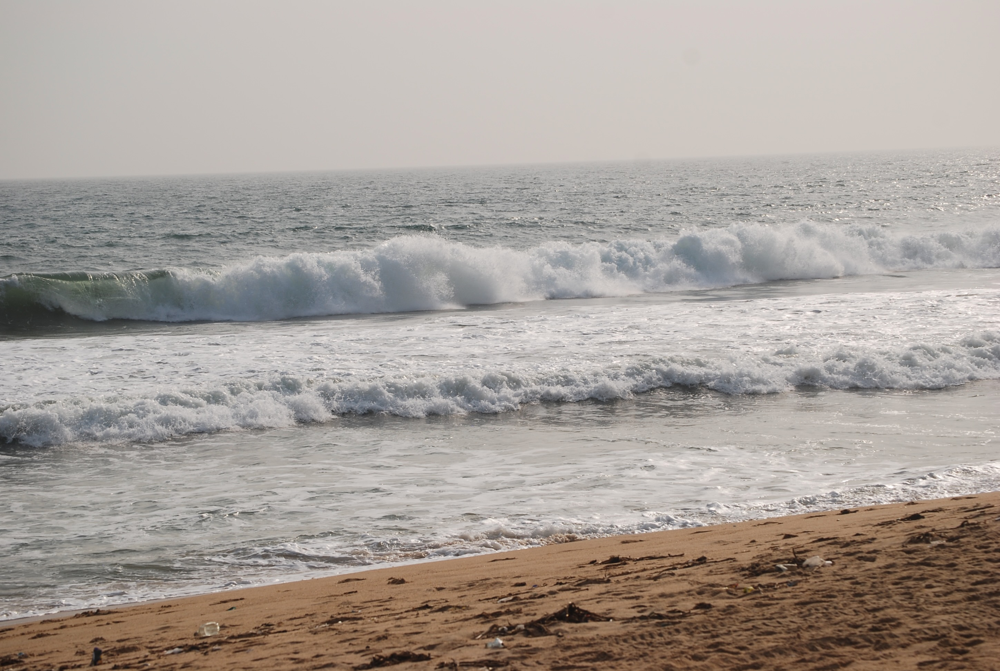
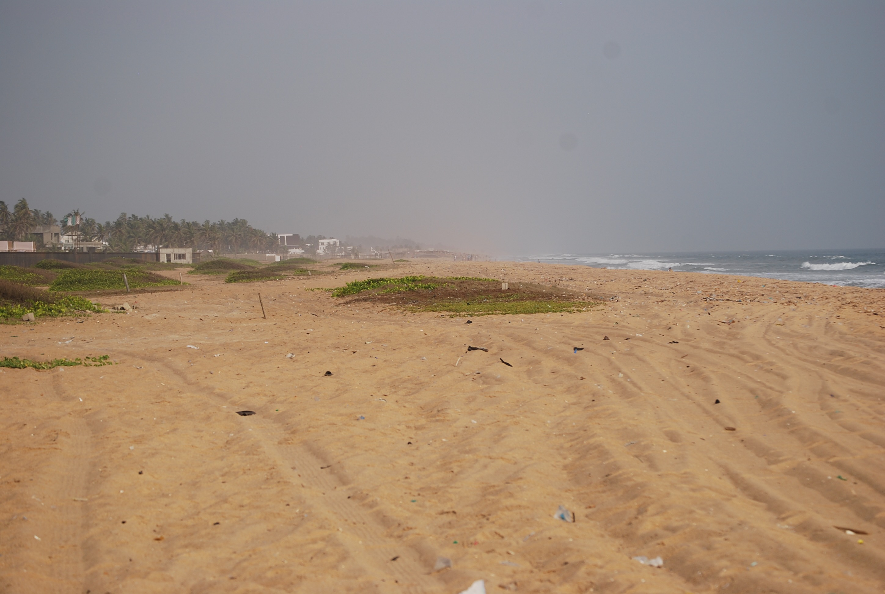
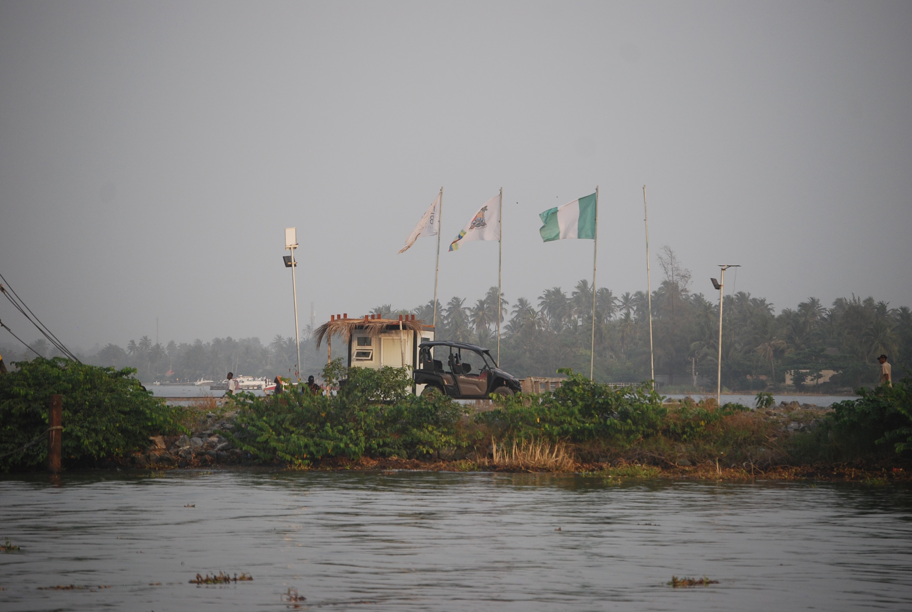
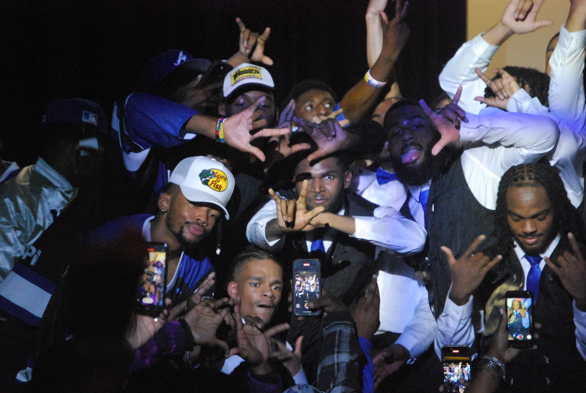

Featured photos
A few favorites that capture landscapes, connection, and celebration.

Family · Mom and friends at PhD celebration
Gallery
A small collection of moments from Nigeria, family milestones, and campus life.





